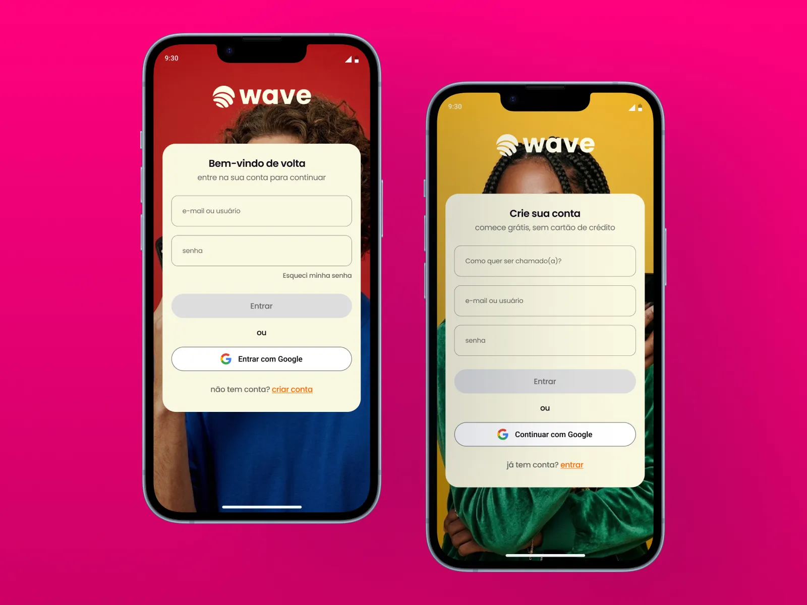
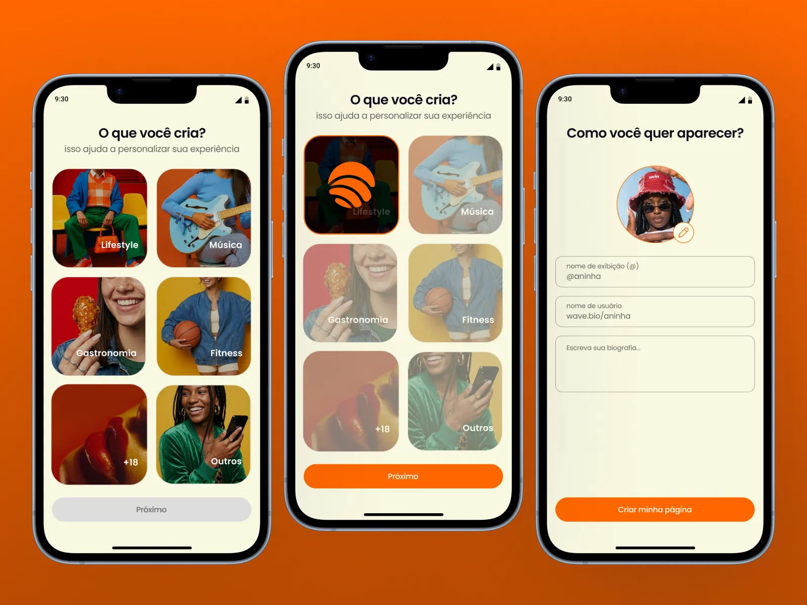
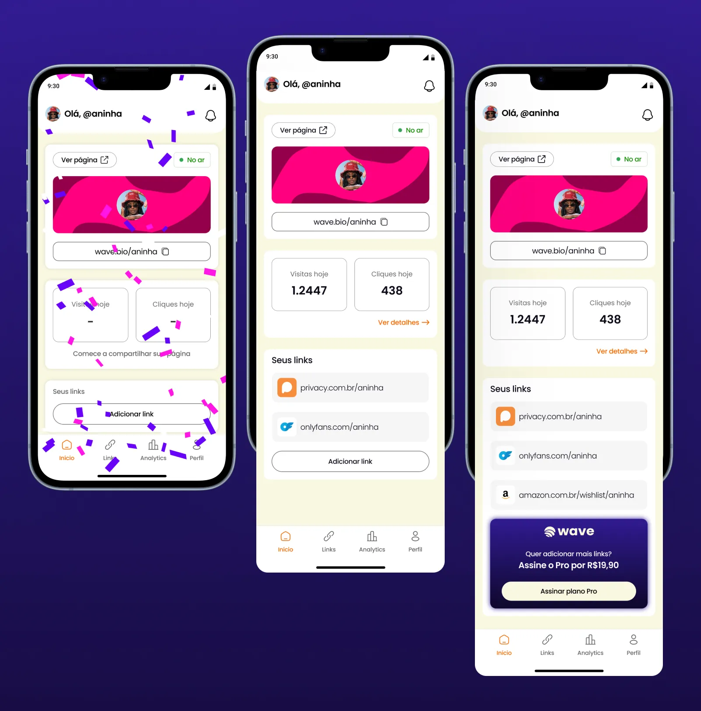
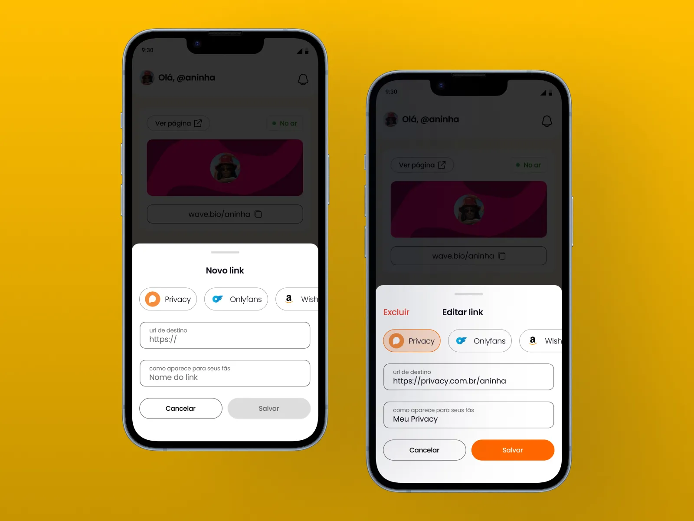
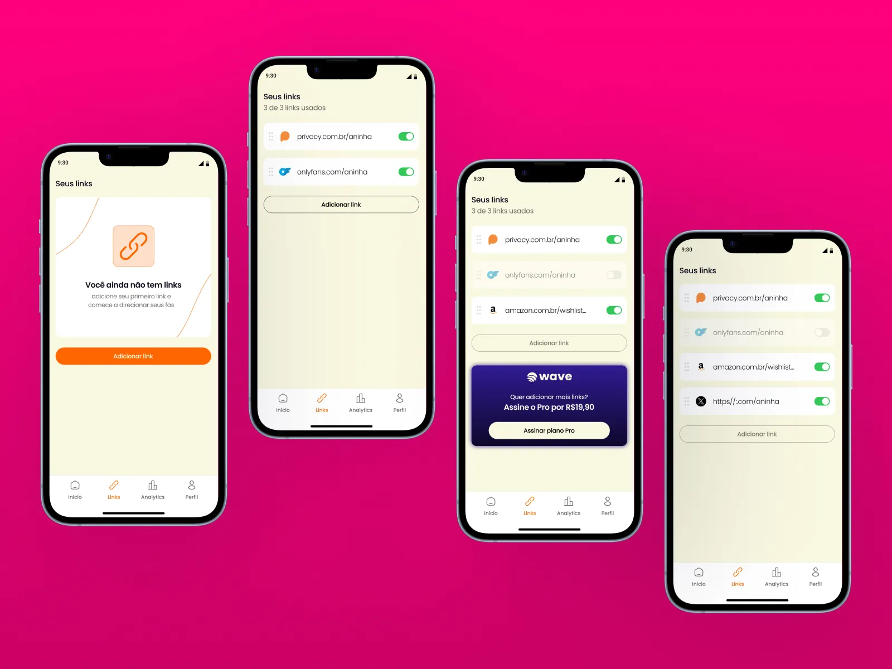
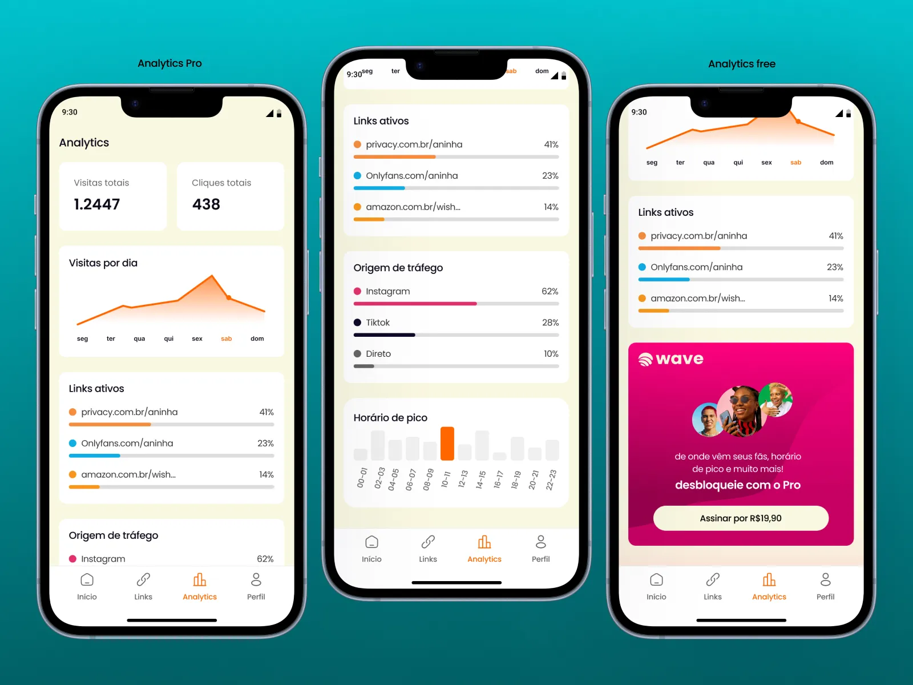
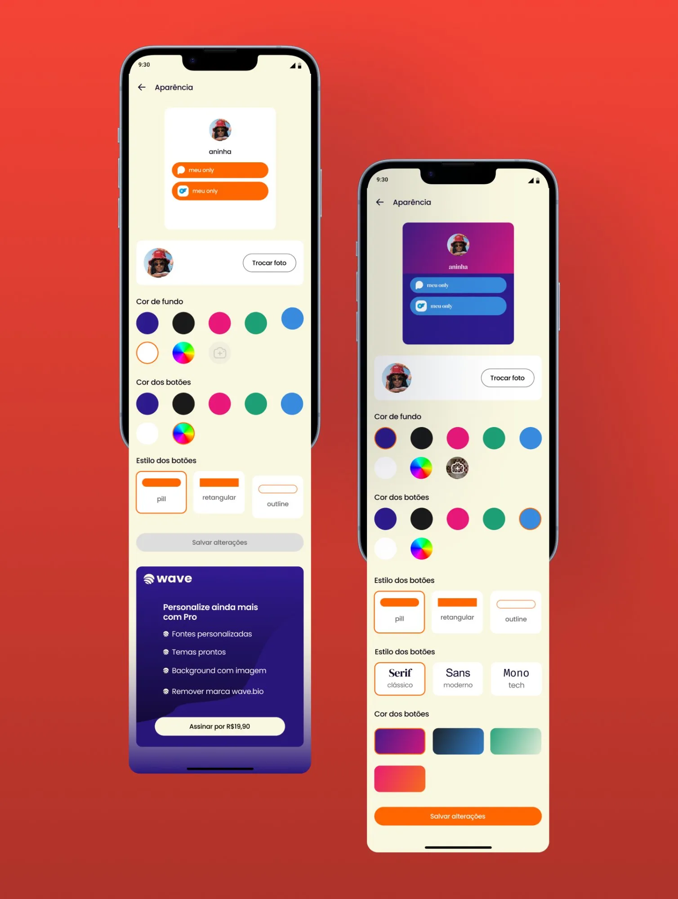
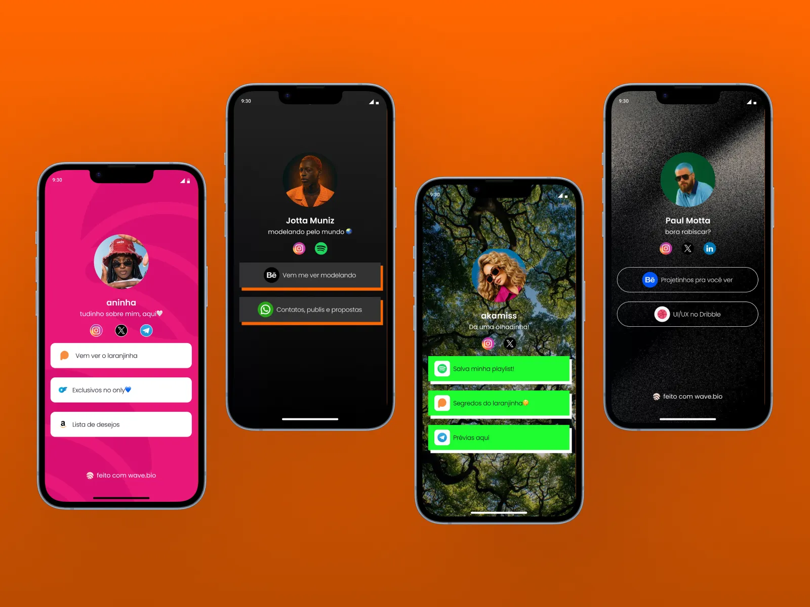

Conceito de produto — uma ferramenta de link-in-bio feita para creators brasileiros, com proteção contra shadowban, personalização real e preço justo em reais.
Instagram e TikTok permitem apenas um link clicável na bio. Para creators que precisam direcionar sua audiência para múltiplos destinos, isso é uma limitação crítica de negócio. As ferramentas de link-in-bio surgiram para resolver essa dor — mas falharam em partes importantes do mercado.
O Linktree foi pioneiro em 2016 e hoje tem mais de 40 milhões de usuários. Mesmo assim, a pesquisa em 6.993 avaliações no Trustpilot revelou falhas graves — especialmente para dois grupos: creators de conteúdo adulto e o público brasileiro.
A pesquisa cruzou avaliações do Trustpilot, G2, Capterra, Product Hunt, App Store, Play Store e fóruns no Reddit. Os padrões que emergiram revelaram um mercado que atende mal exatamente quem mais precisa da ferramenta.
O benchmark de 6 competidores diretos — Linktree, Beacons, AllMyLinks, Stan Store, MyOtherLink e GetAML — revelou lacunas claras que nenhum produto atende de forma completa.
O wave.bio foi desenhado em torno de quatro diferenciais — cada um resolvendo diretamente uma das falhas identificadas na pesquisa.
O design do app foi pensado de ponta a ponta — do onboarding ao dashboard, passando pela gestão de links, analytics e página pública do creator.
Telas de login e criação de conta — com suporte a Google e foto de fundo dinâmica.

Três telas de apresentação dos pilares do produto — shield link, proteção contra shadowban e analytics.
Seleção de nicho (incluindo +18 de forma explícita) e configuração do perfil público.

Dashboard com preview da página, URL com cópia rápida, métricas do dia e lista de links.

Bottom sheet com detecção automática de rede ao colar URL — Privacy, OnlyFans, Amazon e outros.

Gestão completa dos links com toggles, estados vazios e banner de upgrade para o Pro.

Analytics em camadas — plano free com dados básicos e Pro com origem de tráfego e horário de pico.

Customização visual em tempo real — cores, estilos de botão, fontes e temas prontos no Pro.

Variações de personalização da página pública — do plano free ao Pro com backgrounds customizados.

O wave.bio é um exercício completo de descoberta de produto — da pesquisa com fontes reais ao benchmark competitivo, da definição de posicionamento ao design do app. O projeto mostra como uma oportunidade de mercado pode ser identificada a partir de dados públicos e transformada em proposta de produto coerente.